Sublime Text 101
Comment utiliser Sublime Text comme un pro pour être plus efficace au quotidien
Pimper Sublime Text
avec des paquets
Vous devez installer le gestionnaire des paquets en ouvrant la console de Sublime Text View > Show Console. Une fois le script installé vous pouvez rechercher et installer facilement de nombreux paquets pour améliorer votre éditeur de texte.

Rechercher & Installer des paquets
 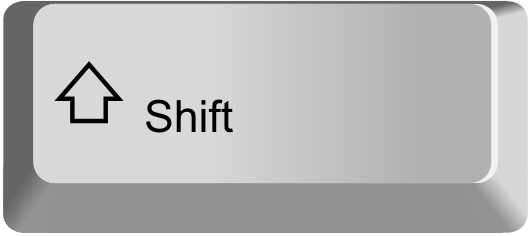
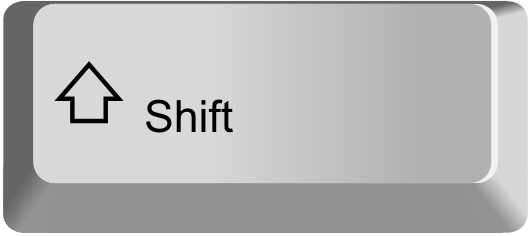
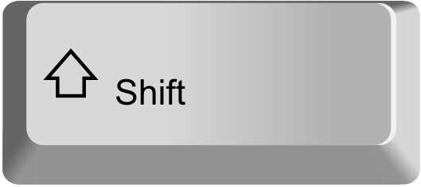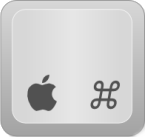
Dans l’invite de commande qui s’affiche vous devez taper installVoici une liste de 5 paquets indispensables à installer :
Hacker l’interface
Sublime est écrit en Pyhton. Vous pouvez écrire vos propres paquets mais vous pouvez aussi personnaliser l’interface simplement à l’aide d’un fichier .json
Si vous souhaitez utiliser le même il suffit d’ouvrir les Preferences > Settings - user et de modifier le fichier Preferences.sublime-settings.
{
"default_encoding": "UTF-8",
"detect_indentation": true,
"ensure_newline_at_eof_on_save": true,
"folder_exclude_patterns":
[
".sql",
"*/sql/*",
".svn",
".git"
],
"highlight_line": true,
"highlight_modified_tabs": true,
"hot_exit": false,
"ignored_packages":
[
"Vintage"
],
"open_files_in_new_window": true,
"remember_open_files": false,
"rulers":
[
78
],
"show_full_path": true,
"tab_size": 2,
"translate_tabs_to_spaces": true,
"trim_automatic_white_space": true,
"trim_trailing_white_space_on_save": true
}
Naviger dans votre projet

Accéder à un fichier avec son nom
Se déplacer dans le fichier ouvert

Accéder à un numéro de ligne
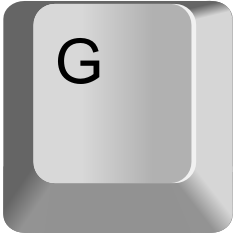
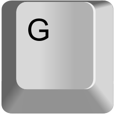Déplacer le curseur au mot suivant
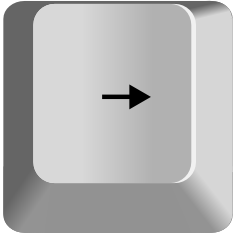
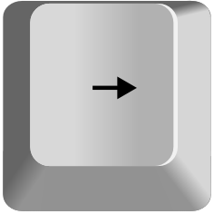Déplacer le curseur au mot précédent
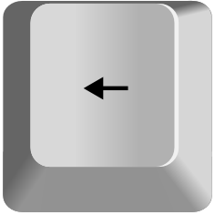
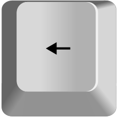Organiser votre code source

Duppliquer une ligne
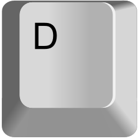
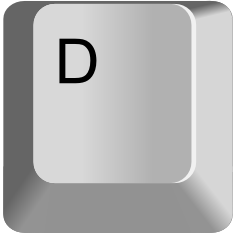Déplacer une ligne vers le haut

Déplacer une ligne vers le bas
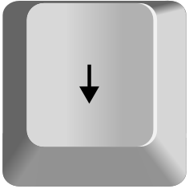
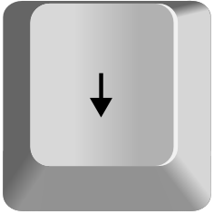Déplacer vers la droite
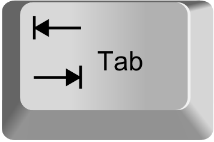
Déplacer vers la gauche
Commenter / décommenter une ligne

Edition multi-lignes

Créer une édition multiple avec la souris
Sélectionner de multiples occurences